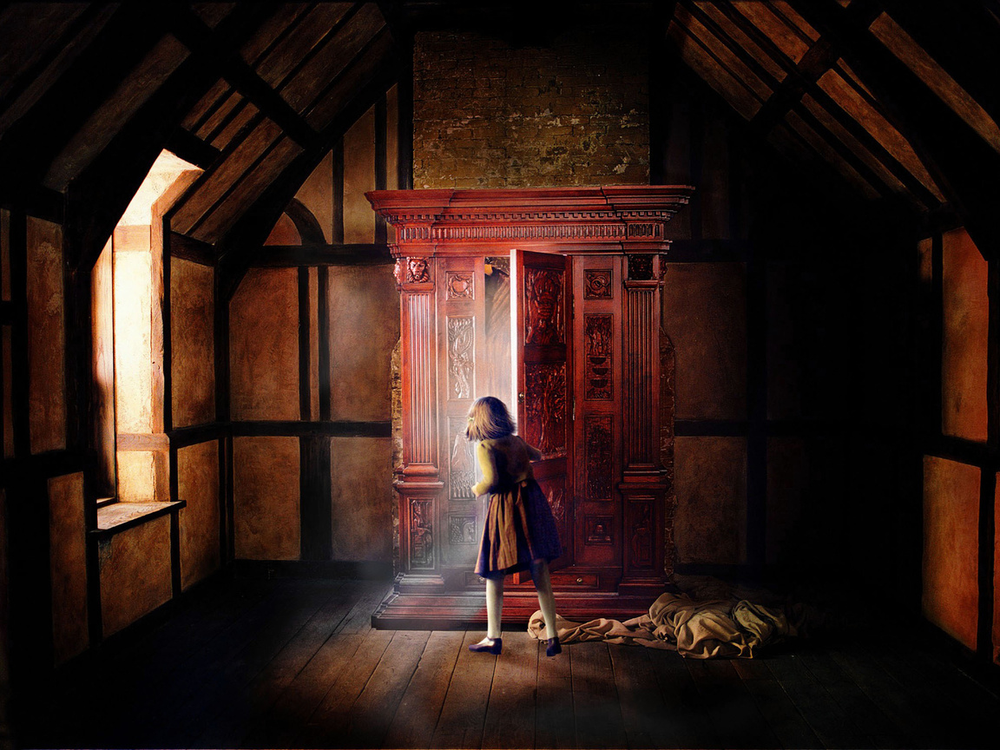
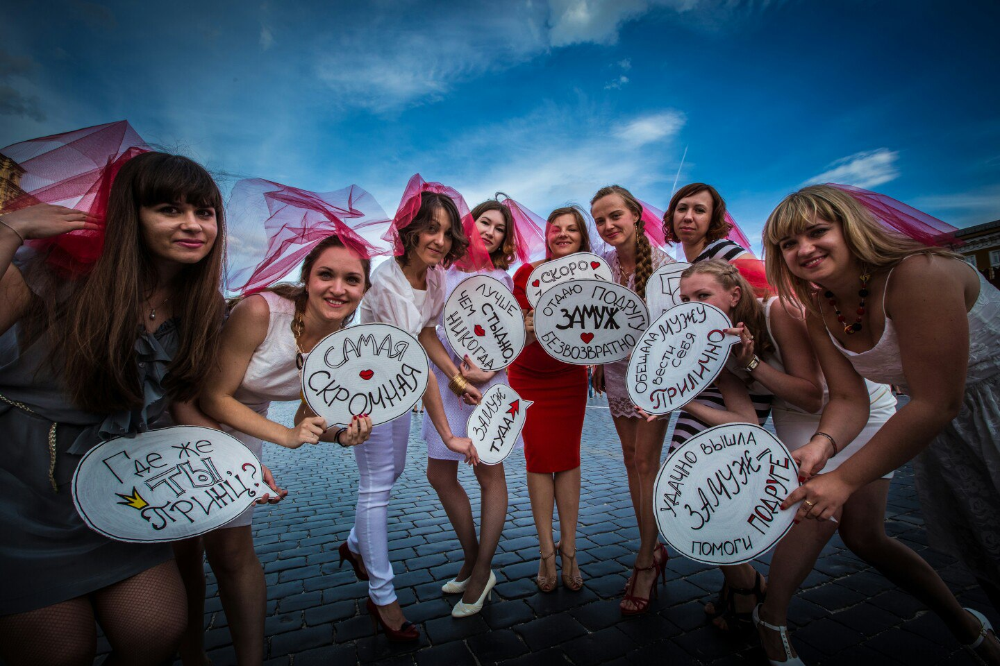
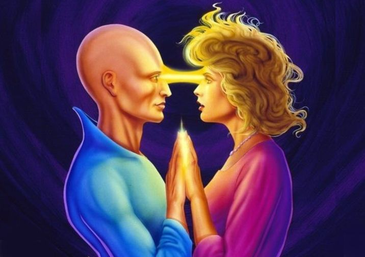
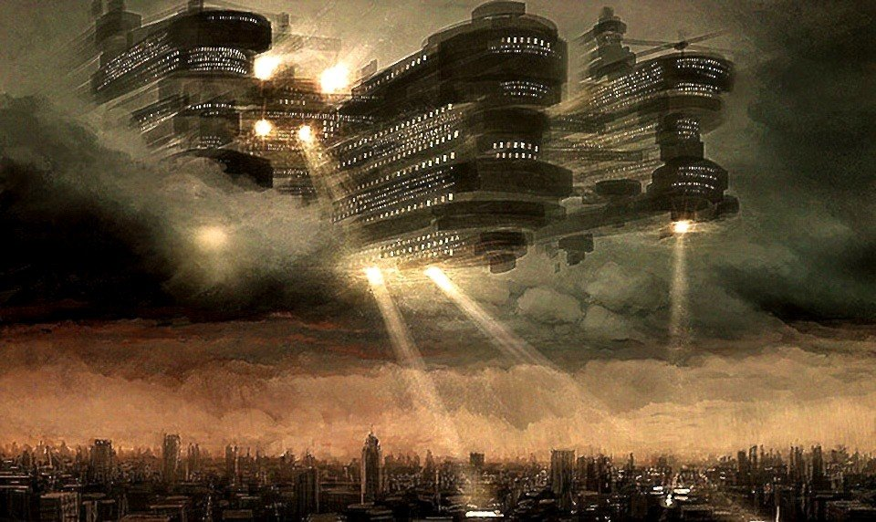
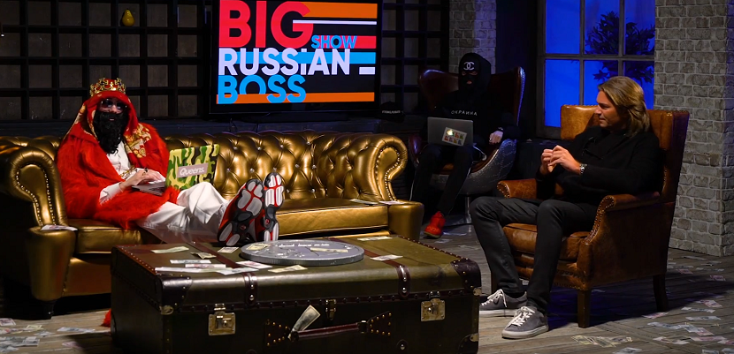
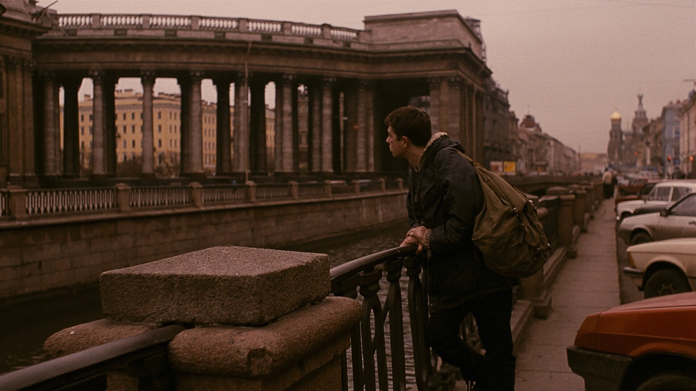
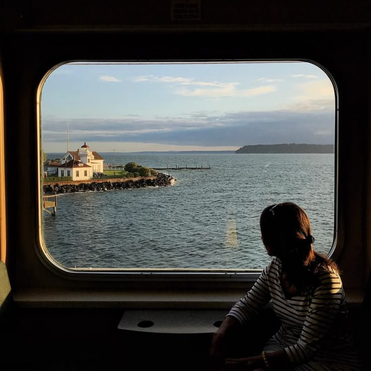
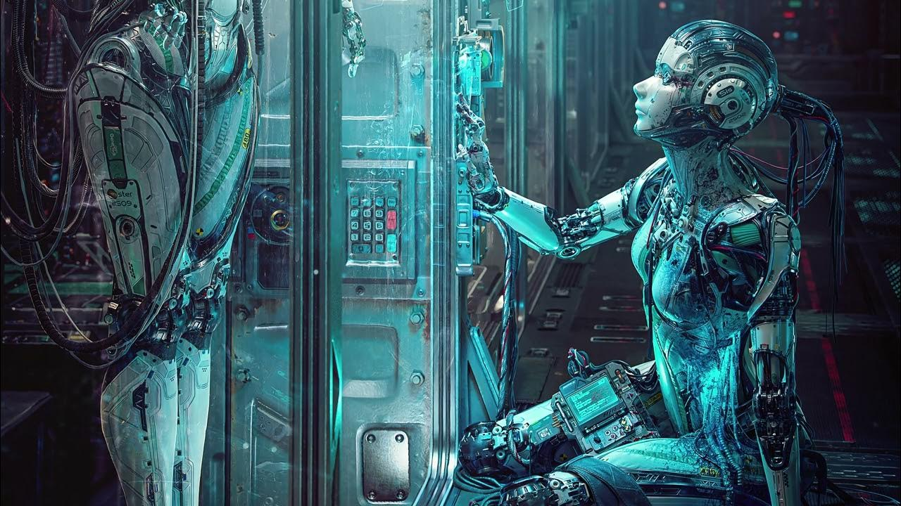
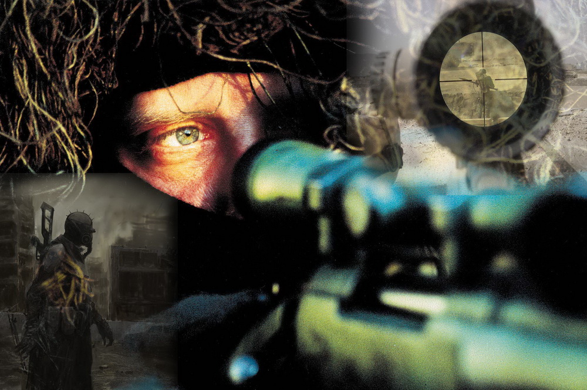
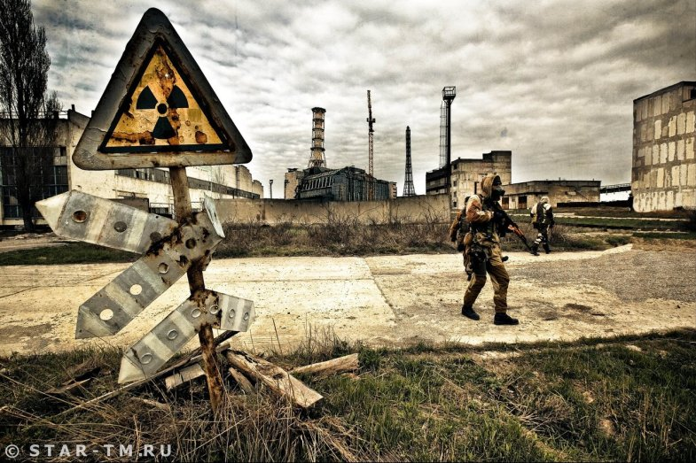

-

1-й узел: ЗАПРЕТНАЯ ПАМЯТЬ
Атмосфера: перед тобой спертый воздух, пыль в солнечном луче, напряжённая тишина. Всё внутри давно смирилось с тем, что ты не вернёшься.
Структура: закрытая дверь. Комната в глубине сна. Может быть шкаф, старая кладовая, потайной ящик. Ты случайно его заметил.
Логика: ты сам запер туда то, что не хотел вспоминать — слова, поступки, лица.
Признак: ты подходишь к двери и не хочешь её трогать. А если откроешь: не хочешь входить.
Уязвимость узла для перезагрузки (или захват если на узле возможен Перелом): впрыскни беспокойство.
Приобретаемая способность: доступность чего угодно за просто так.
Особенность: на узле происходит новый лунный год, где узел по совокупности кармы каждому человеку решает как жить - хорошо или плохо.
-

2-й узел: ПОРОГОВЫЕ ЛИЦА
Атмосфера: вежливая ловушка. Всё кажется "правильным": мягкие голоса, разумные аргументы, знакомые лица. Но внутри — нарастающий холод.
Структура: ты среди тех, кто будто бы рад видеть тебя. Они уверяют, что ты всегда был с ними. Что ты — один из них. Что всё нормально.
Логика: это демагогия. Они не грубят, не угрожают — они убеждают, ласково и настойчиво, будто под кожу проникают. Они не доказывают — они уже решили за тебя.
Признак: в тебе растёт дискомфорт. Их слова гладкие, но ты чувствуешь, что за ними — ложь. Они хотят, чтобы ты забыл, кто ты, и стал кем-то удобным.
Уязвимость узла для перезагрузки (или захват если на узле возможен Перелом): впрыскни недопонимание.
Приобретаемая способность: удерживать весь спектр событий в поле твоего выбора.
-

3-й узел: ОБРАТНАЯ СТОРОНА
Атмосфера: тревожная встреча. Кто-то похож на тебя, но искажён.
Структура: ты видишь двойника. Иногда — он действует против тебя. Иногда - противен.
Логика: тень показывает, чего ты боишься в себе.
Признак: он появляется там, где ты не хочешь быть.
Уязвимость узла для перезагрузки (или захват если на узле возможен Перелом): впрыскни опровержение.
Приобретаемая способность: сделать любого своим союзником.
-

4-й узел: ШЕПОТ ПРЕДКОВ
Атмосфера: монивестуеще, по древнему, сакрально.
Структура: ты видешь грандиозное — всё из далекого прошлого, которое живет и полно силы.
Логика: оно зовет тебя.
Признак: ты восхищаешься увиденным.
Уязвимость узла для перезагрузки (или захват если на узле возможен Перелом): впрыскни раздражение.
Приобретаемая способность: трамплин в любое место.
-

5-й узел: ВХОЖДЕНИЕ В РОЛЬ
Атмосфера: символично, почти все мифическое.
Структура: ты становишься кем-то — воином, магом, судьёй, божеством.
Логика: сновидение предлагает форму, через которую хочет испытать тебя.
Признак: ты говоришь от имени того, кем не являешься. Ты действуешь уверенно, зная то, чему не учился.
Уязвимость узла для перезагрузки (или захват если на узле возможен Перелом): впрыскни безграничность.
Приобретаемая способность: властвовать над кем угодно.
-

6-й узел: БЕЛАЯ ПУСТОТА
Атмосфера: мир живёт, но без тебя. Люди что-то делают, разговаривают, строят планы — ты рядом, но не внутри.
Структура: события происходят, но ты не вписан в них. Всё как будто идёт по сценарию, где ты свободен на любые реплики.
Логика: всё завершилось — для тебя.
Признак: тебя как будто вычеркнули. Всё есть — но не для тебя.
Уязвимость узла для перезагрузки (или захват если на узле возможен Перелом): впрыскни пренебрежение.
Приобретаемая способность: освобождение от любых страданий.
-

7-й узел: ЗЕРКАЛО ТЕЛА
Атмосфера: ты внутри сна — но не управляешь. Все движения автоматичны. Всё — как будто не твое.
Структура: тело движется само, ты не принимаешь решений.
Логика: иллюзия контроля. Ты — внутри, но без воли. Всё за тебя делает “сценарий”.
Признак: момент, когда ты пытаешься сказать или сделать — и ничего не происходит.
Уязвимость узла для перезагрузки (или захват если на узле возможен Перелом): впрыскни неизбежность.
Приобретаемая способность: все скилы опекунства над кем угодно.
-

8-й узел: МЕХАНИЗМ ВРЕМЕНИ
Атмосфера: ты снова в том же месте. Повтор. День сурка. Всё предсказуемо — и бесконечно.
Структура: события идут по кругу. Те же действия, те же локации, те же слова.
Логика: сон закольцован. Он не отпустит, пока ты не осознаешь, что это уже было.
Признак: невозможность “уйти” или “завершить”.
Уязвимость узла для перезагрузки (или захват если на узле возможен Перелом): впрыскни правду.
Приобретаемая способность: трансформация своего тела.
-

9-й узел: ДОПРОС ЧУВСТВАМИ
Атмосфера: напряжение растёт, будто гром перед ударом.
Структура: страх возникает мгновенно. Что то несется на тебя, сердце сжимается, ты хочешь увернуться, закричать.
Логика: сон создаёт образ погони, вторжения, агрессии. Он ставит тебя в центр опасного события, заставляя сказать правду.
Признак: тело сжимается, инстинкты кричат — «спасайся».
Уязвимость узла для перезагрузки (или захват если на узле возможен Перелом): впрыскни неуверенность.
Приобретаемая способность: получение любых знаний накопленных человечеством за все время.
-

10-й узел: МИР БЕЗ ЗАКОНОВ
Атмосфера: абсурд, сломанные законы, но всё — логично по-своему.
Структура: здесь гравитация другая, время не линейно, мораль условна, путь нереален.
Логика: мир сна не нарушен — просто это другой порядок, который ты можешь переписать.
Признак: ты чувствуешь, что можешь управлять “внутренними” правилами.
Уязвимость узла для перезагрузки (или захват если на узле возможен Перелом): впрыскни безразличие.
Приобретаемая способность: делать невозможное.